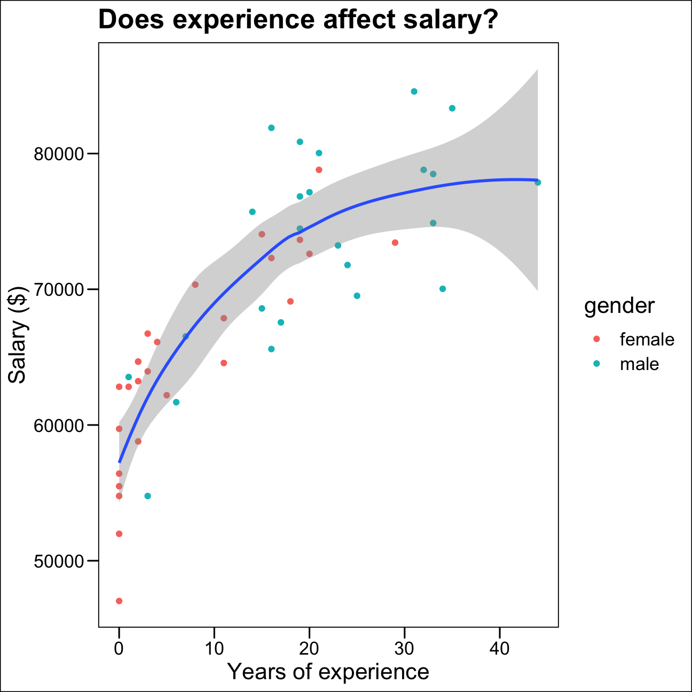
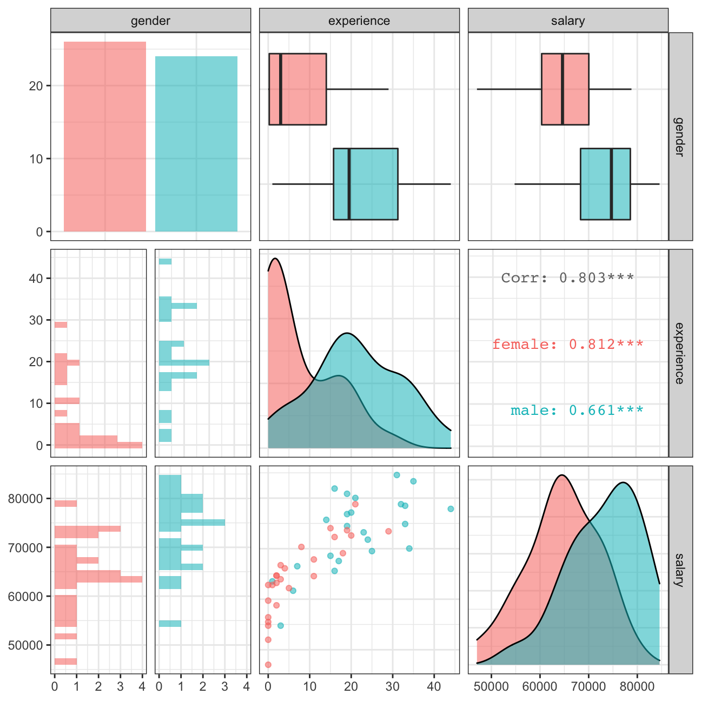

At the last board meeting of Omega Group Plc., the headquarters of a large multinational company, the issue was raised that women were being discriminated in the company, in the sense that the salaries were not the same for male and female executives. A quick analysis of a sample of 50 employees (of which 24 men and 26 women) revealed that the average salary for men was about 8,700 higher than for women. This seemed like a considerable difference, so it was decided that a further analysis of the company salaries was warranted.
The objective is to find out whether there is indeed a significant difference between the salaries of men and women, and whether the difference is due to discrimination or whether it is based on another, possibly valid, determining factor.
omega <- read_csv(here::here("data", "omega.csv"))
# examine the data frame
glimpse(omega) ## Rows: 50
## Columns: 3
## $ salary <dbl> 81894, 69517, 68589, 74881, 65598, 76840, 78800, 70033, 63…
## $ gender <chr> "male", "male", "male", "male", "male", "male", "male", "m…
## $ experience <dbl> 16, 25, 15, 33, 16, 19, 32, 34, 1, 44, 7, 14, 33, 19, 24, …As shown above, the data set has 50 observations and 3 variables, i.e. salary, gender and work experience.
The data frame omega contains the salaries for the sample of 50 executives in the company. Let’s find out if we conclude that there is a significant difference between the salaries of the male and female executives.
# Summary Statistics of salary by gender
mosaic::favstats (salary ~ gender, data=omega) ## gender min Q1 median Q3 max mean sd n missing
## 1 female 47033 60338 64618 70033 78800 64543 7567 26 0
## 2 male 54768 68331 74675 78568 84576 73239 7463 24 0# Dataframe with two rows (male-female) and having as columns gender, mean, SD, sample size, the t-critical value, the standard error, the margin of error, and the low/high endpoints of a 95% condifence interval
omega %>%
group_by(gender) %>%
summarise(mean = mean(salary),
SD = sd(salary),
sample_size = n(),
t_critical = qt(0.975, sample_size -1),
SE = SD/sqrt(sample_size),
margin_of_error = SE*t_critical,
lower_ci = mean - margin_of_error,
upper_ci = mean + margin_of_error)## # A tibble: 2 x 9
## gender mean SD sample_size t_critical SE margin_of_error lower_ci
## <chr> <dbl> <dbl> <int> <dbl> <dbl> <dbl> <dbl>
## 1 female 64543. 7567. 26 2.06 1484. 3056. 61486.
## 2 male 73239. 7463. 24 2.07 1523. 3151. 70088.
## # … with 1 more variable: upper_ci <dbl>From the above table, we find that for almost all the statistics (including min, Q1, median, Q3, max, mean), males have higher salary than females.
Besides, the mean salary of females is in the range [61486, 67599] and the mean salary of males is in the range [70088, 76390]. There is no overlap between these two confidence intervals.This would allow us to reject the null hypothesis, but we will carry out hypothesis testing anyway and analyse the relationships between all the remaining factors.
Then, we use t.test() and the simulation method from the infer package to run a hypothesis testing, assuming as a null hypothesis that the mean difference in salaries is zero, or that, on average, men and women make the same amount of money.
# hypothesis testing using t.test()
t.test(salary~gender, data = omega)##
## Welch Two Sample t-test
##
## data: salary by gender
## t = -4, df = 48, p-value = 2e-04
## alternative hypothesis: true difference in means is not equal to 0
## 95 percent confidence interval:
## -12973 -4420
## sample estimates:
## mean in group female mean in group male
## 64543 73239# hypothesis testing using infer package
male_mean <- omega %>%
filter(gender == "male") %>%
summarize(male_mean = mean(salary))
female_mean <- omega %>%
filter(gender == "female") %>%
summarize(female_mean = mean(salary))
obs_diff <- female_mean - male_mean
stimulated <- omega %>%
specify(salary~gender) %>%
hypothesize(null = "independence") %>%
generate(reps = 1000,
type = "permute") %>%
calculate(stat = "diff in means",
order = c("female", "male"))
stimulated %>%
get_pvalue(obs_stat = obs_diff[1,1],
direction = "both")## # A tibble: 1 x 1
## p_value
## <dbl>
## 1 0In both t.test and bootstrap hypothesis test, the p-value generated is less than the alpha value of 0.05. Therefore, we reject the null hypothesis and conclude that there is a statistically significant difference in salary between male and female employees in Omega Group.
At the board meeting, someone raised the issue that there was indeed a substantial difference between male and female salaries, but that this was attributable to other reasons such as differences in experience.
A questionnaire send out to the 50 executives in the sample reveals that the average experience of the men is approximately 21 years, whereas the women only have about 7 years experience on average (see table below).
# Summary Statistics of salary by gender
favstats (experience ~ gender, data=omega)## gender min Q1 median Q3 max mean sd n missing
## 1 female 0 0.25 3.0 14.0 29 7.38 8.51 26 0
## 2 male 1 15.75 19.5 31.2 44 21.12 10.92 24 0Based on this evidence, we also use the above two methods to run hypothesis testing. Our null hypothesis is that there is no significant difference between the experience of the male and female executives.
# hypothesis testing using t.test()
t.test(experience~gender, data = omega)##
## Welch Two Sample t-test
##
## data: experience by gender
## t = -5, df = 43, p-value = 1e-05
## alternative hypothesis: true difference in means is not equal to 0
## 95 percent confidence interval:
## -19.35 -8.13
## sample estimates:
## mean in group female mean in group male
## 7.38 21.12# hypothesis testing using infer package
male_exp <- omega %>%
filter(gender == "male") %>%
summarize(male_mean = mean(experience))
female_exp <- omega %>%
filter(gender == "female") %>%
summarize(female_mean = mean(experience))
obs_diff <- female_exp - male_exp
stimulated <- omega %>%
specify(experience~gender) %>%
hypothesize(null = "independence") %>%
generate(reps = 1000,
type = "permute") %>%
calculate(stat = "diff in means",
order = c("female", "male"))
stimulated %>%
get_pvalue(obs_stat = obs_diff[1,1],
direction = "both")## # A tibble: 1 x 1
## p_value
## <dbl>
## 1 0In both t.test and bootstrap hypothesis test, the p-value generated is less than the alpha value of 0.05. Therefore, we reject the null hypothesis and conclude that there is a statistically significant difference in experience between male and female employees in Omega Group.
Someone at the meeting argues that clearly, a more thorough analysis of the relationship between salary and experience is required before any conclusion can be drawn about whether there is any gender-based salary discrimination in the company.
So we analyse the relationship between salary and experience and draw a scatterplot to visually inspect the data.
ggplot(omega,
aes(x = experience, y = salary)) +
geom_point(aes(colour = gender)) +
geom_smooth() +
labs(title = "Does experience affect salary?",
x = "Years of experience",
y = "Salary ($)") +
theme_base()
From the scatterplot shown above, there seems to be a positive relationship between years of experience and salary, although the difference in salary appears to decrease at higher levels of experience.
We use GGally:ggpairs() to create a scatterplot and correlation matrix. Essentially, we change the order our variables will appear in and have the dependent variable (Y), salary, as last in our list. We then pipe the dataframe to ggpairs() with aes arguments to colour by gender and make ths plots somewhat transparent (alpha = 0.3).
omega %>%
#order variables they will appear in ggpairs()
select(gender, experience, salary) %>%
ggpairs(aes(colour=gender, alpha = 0.3)) +
theme_bw()
The salary vs experience scatterplot shows that the majority of women in the sample have a comparable salary to men with the same experience level.
The majority of women in the sample have experience between 0 and 20 years, whereas the approximate range of experience for most men is between 10 and 35 years. In the previous analysis, we concluded that there is a statistically significant difference between the levels of experience for both genders. This chart further confirms what we were seeing before. Women seem to end their careers earlier, at least within the given sample.